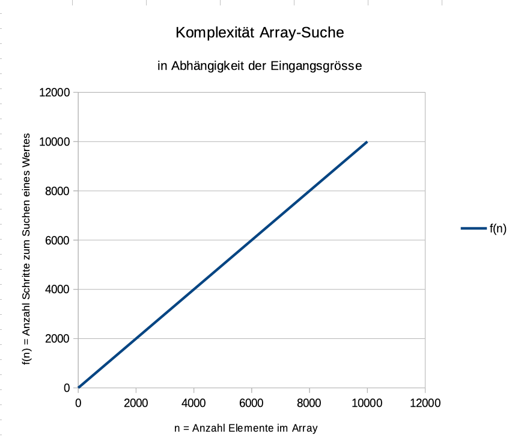
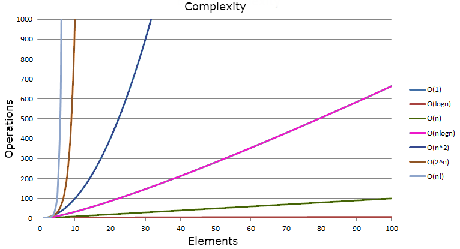

{% extends "../_base_template.html" %}
{% block title %}Lektion 7 - Laufzeitanalyse{% endblock %}

{% block sections %}
<section data-markdown >
<textarea data-template>
<i class="fas fa-graduation-cap"></i> Lektion 7 - Laufzeitanalyse
=============================

Ziele:

* Sie können die O-Notation, den Sinn und Zweck in eigenen Worten beschreiben
* Sie kennen die wichtigsten Komplexitätsklassen
* Sie können Algorithmen in ihrer Komplexität richtig bewerten.

</textarea>
</section>


<section>
<section data-markdown >
<textarea data-template>
<i class="fas fa-graduation-cap"></i> Lektion 7 - Laufzeitanalyse
=============================

Schauen Sie sich folgenden Algorithmus an:

```java
int find(int[] array, int wert) {
    for (int i = 0; i < array.length; i++) {
        if (array[i] == wert) {
            return i;
        }
    }
    return -1;
}
```

**Fragen ins Publikum:** (wir tragen zusammen)

* Was macht dieser Algorithmus?
* Ist dieser Algorithmus effizient?
* Was bedeutet denn **Effizient** bei einem Algorithmus? Welche Kriterien schauen Sie da an?
* Wie verhält sich dieser Algorithmus (zeitlich)
  * bei 1 Element
  * bei 10 Elementen
  * bei 100 Elementen
  * bei 100'000 Elementen?


</textarea>
</section>
</section>

<section>
<section data-markdown >
<textarea data-template>
<i class="fas fa-graduation-cap"></i> Effizienz-Parameter
=============================

Für die Effizienz eines Algorithmus sind 3 Parameter relevant:

* **Rechenzeit**: Anzahl der durchgeführten Elementaroperationen in Abhängigkeit von der Eingabegrösse
* **Speicherplatz**: Maximale Speicherverbrauch während der Ausführung des Algorithmus in Abhängigkeit von der Komplexität der Eingabe
* **Bandbreite**: Wie gross ist die erforderliche Datenübertragung

Wir betrachten bei der Effizienzanalyse ausschliesslich die **Entwicklung des Aufwandes in Abhängigkeit der Eingabegrösse**,
nicht, wie lange der Algorithmus konkret benötigt. Uns interessiert das **Wachstumsverhalten** bei steigender Eingabegrösse.

Auf unser Beispiel von vorhin gemünzt (übrigens das Suchen eines Wertes in einem Array):

* Wieviele Rechenschritte benötigt unser Algorithmus?
* Wie "mühsam" sind die einzelnen Rechenschritte (Komplexitätsanalyse)?
* Wie verhält sich die Anzahl Rechenschritte zur Eingeabegrösse (in unserem Beispiel: obere Grenze)?

<i class="far fa-hand-point-right"></i>Komplexität: Wir suchen also eine **mathematische Funktion, welche die Komplexität in Abhängigkeit der Eingabegrösse darstellt.**

</textarea>
</section>

<section data-markdown >
<textarea data-template>
<i class="fas fa-graduation-cap"></i> Effizienz-Parameter
=============================

<i class="far fa-hand-point-right"></i>Komplexität: Wir suchen also eine **mathematische Funktion, welche die Komplexität in Abhängigkeit der Eingabegrösse darstellt.**

<div style="display: flex">
    
    <div style="margin-left: 10px">

Beispiel: `n = 100`

* Eingangsgrösse `n`: Array-Elemente
* `n = 100` (Array mit 100 Elementen)
* <i class="far fa-hand-point-right"></i> `f(n) = n`: <br />Wir benötigen also auch 100 "Schritte"
* <i class="far fa-hand-point-right"></i> Der Algorithmus verhält sich also **linear / proportional** zur Eingangsgrösse

    </div>
</div>
</textarea>
</section>
</section>

<section data-markdown >
<textarea data-template>
<i class="fas fa-graduation-cap"></i> Praktisches Beispiel: Heuballen
=============================

**Praktisches Beispiel**: Sie müssen einem befreundeten Landwirt helfen, seine Heuballen vom Lastwagen in die Scheune zu tragen. Wie lange dauert dies?

* **Eingabegrösse**: Anzahl Heuballen
* **Anzahl Rechenschritte**: Was muss ich mit einem einzelnen Heuballen machen, bis er in der Scheune ist? (Abladen, Treppe rauftragen, ...)

--> Komplexitätsanalyse: Wie aufwändig sind die einzelnen Schritte, also das Einbringen eines Heuballens?

* Eingabegrösse: Charakterisierung unserer Daten: Welche "Eingabegrösse" ist relevant für unseren Algorithmus?
* Berechnungsschritte: Bestimmen der abstrakten Operationen pro Eingabe / pro Durchlauf

</textarea>
</section>

<section data-markdown >
<textarea data-template>
<i class="fas fa-graduation-cap"></i> Praktisches Beispiel: Heuballen
=============================

Spielen wie dies für die Heuballen durch!

* Unser Wagen hat 120 Heuballen geladen
* Wir brauchen folgende Schritte:
  * Abladen
  * zur Scheune laufen
  * freien Platz suchen
  * Ballen platzieren

<i class="far fa-hand-point-right"></i> Wir benötigen also **4 Einzelschritte** pro Heuballen, also total **4 * 120 Schritte**.

Wir können dies auch in Abhängigkeit der Eingabegrösse schreiben:

**Komplexität `T => T(4*n)`**

<i class="far fa-hand-point-right"></i> Wir haben somit eine mathematische Funktion definiert, welche uns in Abhängigkeit der Eingabegrösse die Komplexität berechnet.
</textarea>
</section>

<section data-markdown >
<textarea data-template>
<i class="fas fa-graduation-cap"></i> Komplexitätsanalyse - Grundsätzliches
=============================

Auf Algorithmen bezogen bedeutet dies folgendes:

* **Eingabegrösse**: Anzahl Bytes, Anzahl Objekte, Anzahl Stellen ...
* **Berechnungsschritte**: Speicherzugriffe, Berechnungsschritte, Funktionsaufrufe ...
* **Komplexitätsanalyse**: Mathematische Analyse.

<i class="far fa-hand-point-right"></i> Bei der Komplexitätsanalyse gehen wir immer vom **Worst Case** aus!

Was bedeutet dies?

**Beispiel: Finden eines Wertes in einem Array:**

```java
int find(int[] array, int wert) {
    for (int i = 0; i < array.length; i++) {
        if (array[i] == wert) {
            return i;
        }
    }
    return -1;
}
```

* Wieviel Mal durchlaufen wir die Schlaufe...
  * im **BESTEN** Fall? (1 mal)
  * im **SCHLECHTESTEN** Fall? (n mal)

<i class="far fa-hand-point-right"></i> Wir müssen für die Analyse davon ausgehen, dass der **schlechteste** Fall eintritt.

Die Berechnung eines "durchschnittlichen" Wertes ist sehr, sehr schwierig, und kommt immer auch auf die Eingabedaten an.
Für die Komplexitätsanalyse verwenden wir daher nur den schlechtesten Fall: Damit muss gerechnet werden.

</textarea>
</section>

<section data-markdown >
<textarea data-template>
<i class="fas fa-graduation-cap"></i> Komplexitätsanalyse - Beispiel
=============================

Spielen wir das Beispiel vom Anfang durch:

```java
int find(int[] array, int wert) {
    for (int i = 0; i < array.length; i++) {
        if (array[i] == wert) {
            return i;
        }
    }
    return -1;
}
```

* Was ist unsere **Eingabegrösse**? <span class="fragment"> --> `int n`: Je höher "n", desto mehr Schritte sind nötig</span>
* Wieviele **Berechnungsschritte** werden benötigt?
  * <!-- .element class="fragment" --> 1x i initialisieren
  * <!-- .element class="fragment" --> n mal i mit Länge vergleichen
  * <!-- .element class="fragment" --> n mal i mit Wert vergleichen
  * <!-- .element class="fragment" --> n mal i erhöhen


<div class="fragment"> 

--> Wir erhalten also folgende Funktion in Abhängigkeit von "n":
  
 `T(n): 1 + n + n + n = 3n + 1`

<i class="far fa-hand-point-right"></i>Dieser Algorithmus hat also eine lineare Abhängigkeit zu seiner Eingabegrösse.

</div>

</textarea>
</section>

<section data-markdown >
<textarea data-template>
<i class="fas fa-graduation-cap"></i> Komplexitätsanalyse - Beispiel 2
=============================

Ein zweites Beispiel:

```java
// wieviele doppelte Elemente gibt es im Array? Naiver Ansatz:
public int doubleElements(int[] a) {
    int count = 0;
    for (int i = 0; i <= a.length; i++) {
        for (int j = 0; j < a.length; j++) {
            if (i != j && a[i] == a[j]) {
                count++;
            }
        }
    }
    return count;
}
```

* Was ist unsere **Eingabegrösse**? <span class="fragment">--> Länge von a = n</span>
* Wieviele **Berechnungsschritte** werden benötigt?
  * <!-- .element class="fragment" --> 1x i initialisieren
  * <!-- .element class="fragment" --> 1x j initialisieren
  * <!-- .element class="fragment" --> n mal i mit Länge von a vergleichen
  * <!-- .element class="fragment" --> n * n mal j mit Länge von a vergleichen
  * <!-- .element class="fragment" --> n * n mal Werte vergleichen (i,j), auslesen und vergleichen, hochzählen (4 Schritte)

<div class="fragment"> 

--> Wir erhalten also folgende Funktion in Abhängigkeit von "n":

T(n): 1 + 1 + n + n<sup>2</sup> + 4*n<sup>2</sup> = 5n<sup>2</sup> + n + 2

<i class="far fa-hand-point-right"></i>Dieser (zugegeben naive) Algorithmus hat also eine **quadratische** Abhängigkeit zu seiner Eingabegrösse.

</div>

</textarea>
</section>

<section data-markdown >
<textarea data-template>
<i class="fas fa-graduation-cap"></i> O-Notation (Θ)
=============================

Für die Effizienzanalyse von Algorithmen wird eine spezielle mathematische Notation verwendet,
die als **O-Notation** bezeichnet wird. Die O-Notation erlaubt es, Algorithmen auf einer höheren Abstraktionsebene
miteinander zu vergleichen.

Algorithmen können mit Hilfe der O-Notation unabhängig von Implementierungsdetails,
wie Programmiersprache, Compiler und Hardware-Eigenschaften, verglichen werden.

**Die O-Notation ist ein Mass dafür, wie sich der Aufwand verhält, wenn man mehr Daten bearbeitet. Wenn z.B. ein Sortieralgorithmus
eine Komplexität von O(n<sup>2</sup>) aufweist, braucht er 2'500 mal länger/mehr Speicher für 1000 Datensätze als für 20 Datensätze.**

Wir messen **keine konkrete Zeit**. Die Zeit interessiert uns erst bei Mikro-Optimierungen (Optimierungen innerhalb einer Effizienzklasse).

> Bei der O-Notation wird die asymptotischen oberen Schranke für die Aufwandsfunktion angegeben.
In anderen Worten: Wir stellen mit der O-Notation immer das **Worst-Case-Szenario** dar.
Die O-Notation zeigt nur die Effizient-**Klasse**, also die Tendenz, wie sich ein Algorithmus zur
Eingabegrösse verhält. Deshalb werden Koeffizienten und nicht dominante Terme weggelassen.

<div style="display: flex">
    
    <div style="margin-left:10px">aus T( 3n+2 ) wird somit: Θ(n): n ist der dominante Term, alles andere interessiert hier nicht.</div>
</div>

</textarea>
</section>

<section>
<section data-markdown >
<textarea data-template>
<i class="fas fa-graduation-cap"></i> O-Notation - Rechenregeln
=============================

Verständliches Beispiel:

> Wenn Sie eine Funktion $g(n)\,=\,n^3\,+\,2\,*\,n^2$ betrachten, so ist der Term $n^3$ in dieser Funktion dominant
gegenüber dem Term $2∗n^2$. Das kann man mathematisch beweisen, aber lassen wir das.
Wir ignorieren also den Term $2∗n^2$ und schreiben:
Die Komplexität dieser Funktion ist $n^3=O(n)$.
<br /><strong>Beachten Sie: Das Gleichheitszeichen ist nicht als “mathematisches Gleich” zu interpretieren.</strong>
Es geht um Mengen, die Darstellung $n^3\,\in\,O(n)$ wäre eigentlich besser, aber weniger verbreitet.

Aus diesem Beispiel folgen ein paar **“Rechenregeln”**: (nächste Folie)

</textarea>
</section>

<section data-markdown >
<textarea data-template>
<i class="fas fa-graduation-cap"></i> O-Notation - Rechenregeln
=============================

**Addition**

1. $f(n) = n + 3 \Longrightarrow f(n) = Θ(n)$: Konstante Summanden werden vernachlässigt
2. $f(n) = n^2 + 3n \Longrightarrow f(n) = Θ(n^2)$: Es zählt der Summand mit dem stärkeren Wachstum

**Multiplikation**

1. $f(n) = 3n \Longrightarrow f(n) = Θ(n)$: Konstante Faktoren werden vernachlässigt
2. $f(n) = n^2 * 3n \Longrightarrow f(n) = Θ(n^3)$: Es zählt die Summe der Exponenten

Wir können somit auch mit Thermen der O-Notation rechnen:

$O(1) + O(n^2) + O(n) = O(1 + n^2 + n) = O(n^2)$

</textarea>
</section>
</section>

<section data-markdown >
<textarea data-template>
<i class="fas fa-graduation-cap"></i> O-Notation - Komplexitätsklassen
=============================

Es gibt eine Reihe von Standard-Komplexitätsklassen - hier eine Liste in aufsteigender Reihenfolge der:
Komplexitätsentwicklung:

| Klasse | Beschreibung |
|------|--------------|
| $O(1)$ |  der konstante Aufwand (einige Suchverfahren für Hashtabellen, Array-Index-Zugriff) |
| $O(log(n))$ |  der logarithmische Aufwand (allgemeine Suchverfahren für Tabellen (Baum-Suchverfahren) |
| $O(n)$ |  der lineare Aufwand (für sequenzielle Suche, Suche in Texten, syntaktische Analyse von Programmen) |
| $O(n*log(n))$ |  (Sortieren) |
| $O(n2)$ |  der quadratische Aufwand (einige dynamische Optimierungsverfahren (z.B. optimale Suchbäume), Multiplikation Matrix-Vektor) |
| $O(n^k)\,fuer\,k\,\ge\,0$ |  der polynomiale Aufwand (Verschiedene, zum Beispiel Matrizen Multiplikationen) |
| $O(2^n)$ |  der exponentielle Aufwand (viele Optimierungsprobleme ) |
</textarea>
</section>


<section>
<section data-markdown >
<textarea data-template>
<i class="fas fa-flask"></i> O-Notation - Praxis
=============================

Am Beispiel unserer `LinkedList.append()`-Methode
-----------------------------------

```java
public class LinkedList<&#8203;T> {
	public ListNode<&#8203;T> head;

	public ListNode<&#8203;T> append(T newValue) {
		ListNode<&#8203;T> newNode = new ListNode<&#8203;>();
		newNode.data = newValue;

		ListNode<&#8203;T> last = head;
		while (last != null && last.next != null) {
			last = last.next;
		}

		if (last == null) {
			this.head = newNode;
		} else {
			last.next = newNode;
		}

		newNode.next = null;
		return newNode;
	}
}
```
<strong>$O(append(n)) = O(?)$</strong>

1. Was ist unsere **Eingangsgrösse n**? <span class="fragment">
  <i class="far fa-hand-point-right"></i> die _Anzahl Elemente_ in der Liste.</span>
2. wieviele Rechenschritte sind nötig, wenn append() ausgeführt wird? <span class="fragment">
  <i class="far fa-hand-point-right"></i> gehen wir dies Schritt für Schritt durch (nächste Folie)</span>
</textarea>
</section>

<section data-markdown >
<textarea data-template>
<i class="fas fa-flask"></i> O-Notation - Praxis
=============================

Am Beispiel unserer `LinkedList.append()`-Methode
-----------------------------------

2. wieviele Rechenschritte sind nötig, wenn append() ausgeführt wird? 
  <i class="far fa-hand-point-right"></i> gehen wir dies Schritt für Schritt durch.

```java
public class LinkedList<&#8203;T> {
	public ListNode<&#8203;T> head;
	public ListNode<&#8203;T> append(T newValue) {
    // 1
		ListNode<&#8203;T> newNode = new ListNode<&#8203;>();
    // 1
		newNode.data = newValue;

    // 1
		ListNode<&#8203;T> last = head;
    //         1                1
		while (last != null && last.next != null) {
      // n * 1: Für jedes Element (n mal) 1 Rechenschritt
			last = last.next;
		}

    //        1 + 1 je nach Pfad
		if (last == null) {
			this.head = newNode;
		} else {
			last.next = newNode;
		}
    // 1
		newNode.next = null;
    // 1
		return newNode;
	}
}
```
<strong>$f(n = anz. Elemente) = O(?)$</strong>

<i class="far fa-hand-point-right"></i> Schritte:  $9 * 1 + n * 1 = n + 9$ Schritte<br />
<i class="far fa-hand-point-right"></i> $f(n = anz. Elemente) = O(n)$

* nur der dominante Term bleibt stehen (n)
* konstante Summanden und Koeffizienten fallen weg

<i class="far fa-hand-point-right"></i> append() entwickelt sich somit **linear zur Anzahl vorhandener Elemente**: Je länger die Liste, desto "teurer" wird das Anhängen.

</textarea>
</section>
<section data-markdown>
<textarea data-template>
<i class="fas fa-flask"></i> O-Notation - Praxis
=============================

Weitere Übungen
----------------

Als (Haus-)Aufgabe lösen Sie nun das Quiz und die Übungen auf Moodle zum Thema.
</textarea>
</section>
</section>
{% endblock %}
